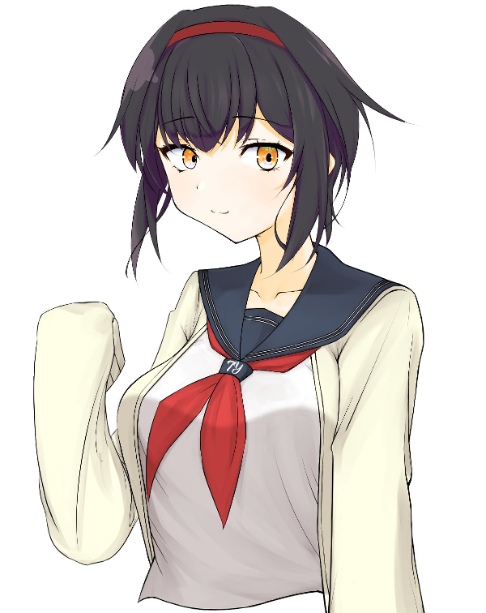

GM : セッションをはじめていく前に、まずはPCの紹介からはじめてもらおうと思います！ PLのめいめい、おねがいします！！
涼風紗雪 : はーい！
■PC1：涼風紗雪
ロイス：犬養一夏 推奨感情：好奇心/不信感
カヴァー/ワークス：高校生/指定なし
あなたはY高校に通う高校二年生だ。
入学式の日、見知らぬ少女から「あたしの事、覚えてますか？」と尋ねられる。
当然ながら“覚えていない”という旨の返答をした後、その少女とは別れることになった――のだが、
何の因果か、その少女・犬養一夏とは、今後一年を通して親密な関係になっていくのだった。
涼風紗雪 : 涼風紗雪！テニス部所属のスポーツ万能な高校二年生！とある大手総合スポーツ用品メーカーの社長令嬢です！
涼風紗雪 : オーヴァードには幼い頃に焼死したことがきっかけで覚醒しました。
涼風紗雪 : だけど運悪くUGNにもFHにも出会うことがなくて、レネゲイドの知識も無いまま一人だけで化け物になった自分と向き合うことになりました。
涼風紗雪 : 当然衝動の制御もエフェクトの使い方も分からなくて、精神的に追い詰められていったのですが……
涼風紗雪 : ある時、昔好きだった物語に出てくる白馬の王子様のことを思い出して、その王子様のように気高く生きれば自分の衝動に打ち勝てるかもしれないと思いつきました！
涼風紗雪 : そんな感じの経緯で王子様みたいな立ち振る舞いをします！一人称僕っ娘です！体小さい女の子だけどひたすらかっこよくあろうとします！
涼風紗雪 : その後は一年位前に初めてFHと遭遇して洗脳されたりするところだったけど、何とか振り切って自分の家族や周囲の人達を守るためにUGNのエージェントになりました。
涼風紗雪 : あと遺産・祈りの造花の契約者で、戦闘になると衣装が変わる変身ヒロインみたいな感じになります！
涼風紗雪 : シンドロームはサラマンダー/ブラックドッグの白兵型で炎神の怒りを使って攻撃も回避もこなすぞ！
涼風紗雪 : そんな感じのスポーツ万能テニス部高校生王子様系お嬢様僕っ娘変身ヒロインUGNエージェントです、よろしくお願いします！
GM : ありがとうございました！
GM : レアな王子様系女子たすかる…！ 自殺を考えるほどの病みも乗り越えているとのことなので、病みヒロインにも対処できそうでよき…！！
涼風紗雪 : 初めてやる気がする！需要あるみたいでよかった
涼風紗雪 : どんな病みでもかかってこい！
GM : プリプレイで言質を取りました。
涼風紗雪 : 言質扱いしてきた…！
GM : ではでは、PCの紹介が終わったところで、プリプレイは以上！ さっそくオープニングフェイズに移っていきます！！
涼風紗雪 : わぁい、おねがいします！
ぼく : ぽたり。 ぽたり。 ぽたり。
ぼく :
しずくがこぼれおちて、足下の血だまりにのみこまれていく。
流れつづける“しずく”の正体は、血なのか涙なのか……もう、ぼくには分からなくなっていた。
ぼく : ■■■。 ■■■。 ■■■。
ぼく :
真っ白になったあたまに、だれかの声が流れ込んでくる。
けれど、ひどくしずかだと思った。
聞こえるのは、しずくの水音とだれかの音声だけ。 ……セミの鳴き声も、人間の泣き声も、右の耳から左の耳へと等しく抜けていく。
少女 : 「こ、この人でなし……！」
ぼく : あたりを支配していたしずけさを、少女の叫び声が破った。
ぼく : 「待……」
ぼく : ぼくは少女を引き留めるために声をあげた。 でも、何故だろう。 その先の言葉が続かなかった。
ぼく : そして、少女は震える足を引き摺って逃げ出した。
ぼく : ぼくには、それを見ていることしかできなかった。
ぼく : 「なんで」
ぼく : こんなことになってしまったんだろう。 そんなことを言っても、返ってくる答えなんてない。
ぼく : 身体じゅうの力が抜けていき、ぼくは血だまりにたおれこんだ。
ぼく : ──真っ白な思考と真っ赤な視界の間。 「人でなし」という少女の言葉だけが、いつまでも深く刺さって。
ぼく :
ぼくの意識は、真っ黒な深みに沈んでいった。
ぼく :
ぼく : ……あの“であい”さえなければ。
ぼく : ……あの“ねがい”さえなければ。
ぼく : 今頃、ぼくはラクになれていただろうか。
GM : せんぱい！ 登場おねがいします！！
涼風紗雪 : せんぱい出ます！
涼風紗雪 : 1d10+34(1D10+34) ＞ 6[6]+34 ＞ 40
GM : 4月1日。 天気は晴れ。
GM :
一週間ちょっとの春休みが終わり、今日は入学式の日だ。
久しぶりの制服に着替え、教科書等が抜けてスッカリ軽くなった学生カバンを肩にかける。
GM : 春の陽気の訪れはまだ遠く、外気温は10度あるかないかくらい。 ……式の間は手放さなければならないが、一応、アウターを手に取って準備完了。
GM : 暖房設備が充実した快適な家を抜け出し、差し込む朝日に目を細めながら玄関の扉を開く。
GM : すると、赤褐色の髪を二つ結びにしたセーラー服の少女が、向かいの塀に体を預けてスマホを弄っている姿が目に入ってきた。
狩野春香 : 「よっ、スズ。 久しぶり～……ってほどでもないか、春休み短かったし」
GM : あなたのことを“スズ”と愛称で呼び、小さく手を振るこの少女は、狩野 春香(カノ ハルカ)。 あなたとは幼稚園からの付き合いがある幼馴染だ。
GM : 二人は小学生まで同じ学校に通っていたが、中学生になると、あなたは親の方針で遠くの御嬢様学校に、春香は地元のY中学校に進学した。
GM : そのため、一時的に二人は離れ離れになっていたのだが、三年振りにY高校で再会を果たし……それ以来、こうして待ち合わせて、再び一緒に登校する運びとなったのだ。
涼風紗雪 : 「やぁ、おはよう春香」
涼風紗雪 : 「言われてみれば、確かにそうかもしれないね。二週間も無かった気がするし」
涼風紗雪 : そう微笑みかけながら手を振り返して、春香ちゃんのもとまで歩いて行きます
GM : あなたは春香の傍まで歩いていこうとしたが、その前に、手で制止された。
狩野春香 : 「……今日は、さ。 伝えたいことがあってね？」
涼風紗雪 : 「え？何かな」 少し驚きつつも立ち止まる
GM : 春香はゆっくり目を伏せると、あたかも深刻な話があるように切り出した。
狩野春香 : 「実は、私、彼氏できたの。 ――だから、明日からは迎えに来ない」
涼風紗雪 : 「……！そうなんだ……！おめでとう、春香」
狩野春香 : 「……あ、あれ？ 驚かないの？ 彼氏できたんだよ？」
涼風紗雪 : 「もちろん驚いてるよ。でも、先に言うべきことは祝福することだろ？」
狩野春香 : 「おおう、そんなマジに受け取られるとは……」
狩野春香 : 「スズさんやスズさんや」
狩野春香 : 「今日は何月何日か、言ってごらんなさい？」
狩野春香 : 急に口調が老婆になったり、御嬢様になったりしながら、春香はそういって笑った。
涼風紗雪 : 「今日？えーと、何日だったかな……」
涼風紗雪 : スマホを取り出して日付を確認してみて、
涼風紗雪 : 「……四月一日だね」
狩野春香 : 「へへっ」
狩野春香 : 「おわかりいただけただろうか……(低温)」
狩野春香 : 「彼氏ができたなんて、口から出任せ…！ 折角だからついてみたエイプリルフールのウソだったのでした…！！」
涼風紗雪 : 「もう、すっかり騙されたよ……！やるね、春香」 面白そうに小さく笑って
涼風紗雪 : 「だけどいいの？エイプリルフールについた嘘って、確か叶わなくなるんじゃなかったっけ」
狩野春香 : 「ぇ…………」
狩野春香 : 「あ、あはは～！ そ、それは日本で最近できたマイナールールというヤツだよスズちゃん！」
狩野春香 : 「ちなみに“ウソをついていいのは午前だけ”というのも、イギリス(?)の別行事から伝わって誤解された日本のマイナールールらしいよ？ だから、大丈夫……大丈夫……」
涼風紗雪 : 「ここ、日本だけどね。でも、別に良いじゃないか叶わなくたって」
涼風紗雪 : 「祝いはしたけど、もう迎えに来れないって言われて実はちょっと寂しかったんだ」
涼風紗雪 : 「春香に彼氏が出来なければ、これからも一緒に登校出来るってわけだしね」
涼風紗雪 : そんな風に冗談っぽく笑いながら改めて春香ちゃんの傍まで歩いていく
狩野春香 : 「うう、叶わないなんて嫌だぁ……。 入学前に夢見ないこともなかった甘酸っぱい青春の日々を送るんだ、私はぁ……。 い、今はムリだけどぉ……」
GM : 春香はわざとらしく目元を拭う仕草をすると、あなたに笑い返した。
狩野春香 : 「……そういえば、スズには恋人とかいないの？ そういう噂を聞いたことはないけど、実はいるんでしょ？ っていうか、いない方がありえなくない？」
涼風紗雪 : 「ふふっ……え？僕に恋人？いや、本当にいないよ」
涼風紗雪 : 「そもそも、これまでだって誰とも付き合ったことないしね」
狩野春香 : 「えっ！？ いない！？ マジで言ってる？？？？ 」
狩野春香 : 「ん～～、考えてみれば、確かに……？ いたら私と一緒に登校してないか……？」
涼風紗雪 : 「だろ？……何て言うか、告白されたりはあったけど、まだ誰ともそういう関係になりたいと思えないんだよ」
涼風紗雪 : 「僕自身がまだ理想の王子様とは程遠いし。やっぱり今は恋人を作る気はないかなぁ」
狩野春香 : 「ふうん…？ でもさ、スズ、それっていつになったら恋愛できるようになるの？ 自分の能力に付き合うハードル付けてるのスズくらいだよ？」
涼風紗雪 : 「いつだろうね……でもきっといつかは来るよ。毎日ちゃんと前進してるからね」
涼風紗雪 : 「心配かけてごめんね。でももしそのいつかが来て、恋人が出来たら、一番に春香に報告するから気長に待ってて欲しいな」
狩野春香 : 「おっ、期待して待ってますぜい姉御！」
狩野春香 : 「(でも、スズのことが好きな子、苦労しそうだな～……)」
涼風紗雪 : 「ふふっ、期待しててくれよ。……じゃ、そろそろ行こうか？歩きながらでもお話は出来るしね」
狩野春香 : 「ん。 そうだね」
GM : 話がひと段落ついたところで、エイプリルフールのウソもほどほどにして、二人は歩き出した。
狩野春香 : 「あっ、そうだ！ 聞いてくれる？ 春休みにさ、数人でお泊り会したんだけどさ？」
涼風紗雪 : 「うん？そうなんだ。いいね、お泊り会」 歩きながら聞く姿勢
狩野春香 : 「いいでしょ！ 今度、スズもお泊り会しようよ、部活とかない日にさ」
涼風紗雪 : 「良いの？もちろん、春香や他の皆がよければ参加したいな……！」
涼風紗雪 : 「僕の家に泊まりに来てくれるのも、誰かの家に泊まりに行くのもどっちでも楽しそうだ」
狩野春香 : 「スズの家に泊まりに行くのは流石に恐縮しちゃうんじゃないかなあ…。 スズ、高嶺の花みたいな印象持たれがちだから」
狩野春香 : 「スズに興味がある子って結構多いし、あとで私の方でセッティングしとくね」
狩野春香 : 「……と、何話そうとしてたんだっけ。 ああ、そうだ、春休みのお泊り会」
涼風紗雪 : 「高嶺の花なんて自分では思ってはないけど、楽しみだな……。あっ、そうだね、何か面白いことでもあったの？」
狩野春香 : 「面白い事？ なのかな……？ それは微妙だけど、ず～～～っっっと彼氏とビデオ通話してる子がいてさあ？」
狩野春香 : 「……ああ、プライバシーのために名前は伏せさせてね。 ……と言っても、見れば誰かわかると思うけど」
GM : 春香は取って付けたようにそう付け加え、また見知らぬカップルに話を戻す。
狩野春香 : 「バレンタインきっかけで付き合いだしたらしいんだけど、もうラブラブ見せつけてくれちゃってさ～……」
涼風紗雪 : 「はぁ～……なるほど」 相槌
狩野春香 : 「あっ、でも、それがイヤだったから愚痴ってる訳じゃないよ？ ……むしろ、な～んかうらやましいな～なんて」
涼風紗雪 : 「あぁ、それならよかったよ……！嫌な気持ちになっちゃったのかなって心配しちゃった」
狩野春香 : 「まあ、友達との時間なんだし、そこにまで彼氏を持ち込むのはよくないとは思ったけど」
狩野春香 : 「恋は盲目って言うの？ その人の存在が大きすぎて、他が目に入らなくなってるカンジで……めっちゃ幸せそうだな～って」
涼風紗雪 : 「そっか……僕にはあんまり羨ましいとかは分からないけど、幸せそうなのを間近で見たらそうなるのも不思議じゃないね……」
涼風紗雪 : 「……よっぽど彼氏欲しいんだね、春香」
狩野春香 : 「えっ！？ あ～～～～…………」
狩野春香 : 「そう見えます…………？」
涼風紗雪 : 「うん、凄く」 何度も頷く
狩野春香 : 「ぐっ……」
狩野春香 : 「……そ、それは、もうっ！ 欲しいでしょッ！ 私だって彼氏欲しい！！！！ 一度きりの青春というやつを謳歌したいし！！！！ わ、悪いかこんにゃろ～！！！！」
涼風紗雪 : 「ご、ごめんごめん……！誰も悪いとは思ってないからさ！だから落ち着いて欲しいな、春香さんや……！」 春香ちゃんの真似するような呼び方してる
狩野春香 : 「こ、告白される側の人種が、バカにして～～～～！！ もうっ！！ なんでこんな恥ずかしいことを路上で叫ばなきゃいけないのかっ……！！」
狩野春香 : 「はあ……」
涼風紗雪 : 「……大丈夫だよ。そんなに焦らなくても、春香にはきっと素敵な恋人が出来るはずだから」
狩野春香 : 「めっちゃ無責任なこと言うじゃん……」
涼風紗雪 : 「そんなことないよ。だって春香は優しいし、明るいし、話してて楽しいし、その他にも言い切れないくらい良いところがいっぱいあるし……」
涼風紗雪 : 「本当に素敵な人だと思ってるから。だから大丈夫だよ、幼馴染として保証する」 微笑みかけて
狩野春香 : 「……ん。 ちょっと元気出た」
狩野春香 : 「なぜなら、そこまで言うからには、引き取り手が見つからなかった場合の補償責任がスズ側に生まれるからです……」
涼風紗雪 : 「え、僕に？ 見つからないなんて思ってないけど、その時は僕が付き合えばいいのかな？」
狩野春香 : 「いやいや、ぜんぶ冗談ですから！ でも、ありがとね！！」
狩野春香 : 「スズが男子だったら本気で頼んだかもしれな……いや、ないわ。 自分には釣り合わないみたいなこと言われてフラれて終わりだわ」
涼風紗雪 : 「いやいや、流石にそこまで行ったら僕も責任取ってフラないよ……！」
狩野春香 : 「ええ……？ ホントにござるか～……？」
涼風紗雪 : 「ほんとうっ。って、冗談だっけ」 春香ちゃんの口調にくすくす笑いながら
狩野春香 : 「そうそう、冗談冗談。 エイプリルフールですから」
狩野春香 : 「いや、彼氏欲しいのはホントだけど……」ぼそっ
狩野春香 : 「とにかく、三年になったらもう受験とかで忙しくなるだろうし、この一年が青春を謳歌するラストチャンスなんですよ……！！」
狩野春香 : 「おたがいにがんばっていこうではありませんか……」
涼風紗雪 : 「そうだね……うん、分かった。頑張るよ」
涼風紗雪 : 「まずは僕自身が文句のないくらい、立派な王子様にならなきゃね……！」 瞳をキラキラ輝かせながら小さく握り拳をつくる
狩野春香 : 「その調子ですぞ、王子！」
GM : 爺やのつもりなのか、低い声でそういった。
涼風紗雪 : 「あぁ。見ててくれ、爺や……！ ふふっ」 ノッてそう言ってから、楽しそうに笑う
狩野春香 : 「がんばると決めたからには、自己研鑽はもちろん、“彼氏ほしい～”とか“彼女ほしい～”とか、そんな“誰でもいい”みたいなスタンスじゃなくて、盲目になるくらい好きになれる人を探すことも目標にしていきますぞッ……！！」
涼風紗雪 : 「うん、頑張れ頑張れ……！一途なのは良いことだし、応援してるよ」
GM : 周囲の影響なのか、恋愛脳に染まりつつある幼馴染と他愛のない話を交わしながら、十五分ほど歩いたところでY高校の校庭に着いた。
GM : 玄関前にはクラス分け表が貼り出されており、各学年の生徒たちが、それぞれ三つの塊になって集まっている。
狩野春香 : 「……と、春らしい話題に花咲かせていたら着いちゃった」
涼風紗雪 : 「あっという間だったね。僕達もクラス見に行こうか」
GM :
あなたと春香が属する二年生のクラス分け表の前には、無数の女子が集まっていた。
友達連れで見に来たグループが多いらしく、後ろからのクラス確認はとてもできそうにない密度だ。
狩野春香 : 「去年もこんなカンジだったっけ。 ……う～ん、二人で行っても効率悪そうだし、スズの分も見せてもらってくるね」
涼風紗雪 : 「いいのかい？僕が行こうかと思ったけど……じゃあ、お願いするよ」
狩野春香 : 「おまかせされました！ あれっ、友達のために率先して体張るとか、私、優しすぎ……？ モテ期きちゃうかコレ……？」
GM : 春香は冗談交じりの自画自賛をした後、“すぐ戻ってくるから待ってて”と手を振りながら人混みに飛び込んでいった。
涼風紗雪 : 「春香は優しいよ。気を付けてねー」 手を振って見送って
涼風紗雪 : 「……新しい人と会うのは楽しいけど、春香とは今年も一緒のクラスだったら良いな」
涼風紗雪 : そう呟いて、人ごみの方を見つめながら春香ちゃんが帰って来るのを待とう。
GM :
GM : ――それから数分後。
GM : あんなことを言っていた幼馴染が、その場にいた女子グループに加わって話しだしたのが遠目にも見えた頃。
見知らぬ少女 : 「えっ……？ せん、ぱい……？」
GM : あなたのすぐ後ろから、弱弱しい鳴き声のような少女の声が聞こえた。
涼風紗雪 : 「……？」 誰だろう、と後ろを振り返る
GM : 振り向くと、声の主は“信じられない”と言いたげな視線をあなたに向けていた。
GM : 遅刻しそうだったからか、いくらか寝癖で乱れてしまっている深い黒のショートヘア。
GM : サイズを間違えたからか、手がすっぽりと覆われるほどゆるゆるのカーディガン。
見知らぬ少女 : 「えっと、その……あたしのこと、覚えてますか？」
GM : ――少し抜けているところがあるような印象を抱かせる、この少女。
GM : 真新しい制服に身を包んでいること、そして「せんぱい」と呼んできたことから考えれば、おそらく新入生なのだろう。
GM : しかし、あなたには、このように射抜くようなあつい視線を向けてくる後輩がいた覚えはないし、その姿にも見覚えはなかった。
涼風紗雪 : 「……えっ、と」
涼風紗雪 : そんな風に言われるということは知り合いのはずだと、じーっと顔をよく見て思い出そうとする。
涼風紗雪 : 「…………」
涼風紗雪 : 「……ごめん、思い出せない。どこかで会ったかな……？」 申し訳なさそうに
見知らぬ少女 : 「そうですか……」
GM : 少女は俯きながらも口元には小さく笑みを浮かべていた。
GM : ……何故だろうか。 その姿にはうっすらとした既視感があった。
GM : けれど、いくら記憶を探ったところで誰かの名前が浮かんでくることはなかった。
涼風紗雪 : 「（どこかで見たような気はするんだけど……。何でだろう……）」
涼風紗雪 : 「本当にごめんね。よければ君の名前を教えてもらってもいいかな？」
見知らぬ少女 : 「あたしは、犬養 一夏(イヌカイ イツカ)と言います」
GM : やはり、あなたは、その名前にも覚えはなかった。
涼風紗雪 : 「（……駄目だ、覚えてない。名前を聞けば思い出せるかもしれないと思ったんだけど……）」
涼風紗雪 : 「犬養一夏……一夏ちゃんって呼んでもいいかな？」
犬養 一夏 : 「はい、もちろん」
涼風紗雪 : 「ありがとう、一夏ちゃん。僕の名前は……って、もしかしてもう知ってるのかな？」
犬養 一夏 : 「いえ、教えてもらえるとうれしいです」
涼風紗雪 : 「分かった。僕は涼風紗雪、っていうんだ。よろしくね、一夏ちゃん」
犬養 一夏 : 「……涼風紗雪」
犬養 一夏 : 「……あっ、はい！ よろしくおねがいしますね、せんぱい！ 」
犬養 一夏 : 「……ああ、せんぱい！ さっき聞いたことは、どうか忘れてください！ 単なる人違い、だったみたいですから……」
涼風紗雪 : 「え……そうなの？本当に？」
犬養 一夏 : 「はい！ こんな朝からヘンなこと聞いちゃってごめんなさい……！」
涼風紗雪 : 「ううん、気にしないで……！変なことなんて全然思ってないから」
涼風紗雪 : 「むしろ、入学式前から君みたいな素敵な一年生さんと出会えて嬉しいよ」 口元に笑みを浮かべる
犬養 一夏 : 「…………」
犬養 一夏 : 「あたしも、うれしいです」
GM : 一夏はそう言って笑ったが、その笑顔には、どこか翳りがあるように見えた。
犬養 一夏 : 「……あっ！ ごめんなさい！ もうこんな時間！！ あたし、行かないとっ！ さようなら！！」
GM : 一夏は深々と腰を折って頭を下げると、そそっかしく小走りでその場を後にした。
涼風紗雪 : 「……うん！気を付けてね」 手を小さく振って見送る
涼風紗雪 : 「礼儀正しくて、良い子だな……。でも、なんか……」 翳りのあるような笑顔が頭から離れない
涼風紗雪 : 「……やっぱり、どこかで会ってたのか……？でも、あの子は人違いだって言ってるし……しつこく問いただすのも……」
涼風紗雪 : うーん、うーん……と唸りながら春香ちゃんが来るまでずっと悩んでる。
GM : そうして悩んでいると、ナゾの後輩と入れ替わるように春香が帰ってきた。
狩野春香 : 「……？ あの子、知り合い？ 新入生っぽかったけど」
涼風紗雪 : 「春香、おかえり……。いや、知り合いではない……みたい……なんだけど……」 腕組をしながら頭が傾いていってる
狩野春香 : 「な～んだ。 かわいい後輩見つけて、さっそく粉かけてたのかとも思ったけど、そうでもないっぽいね～」
涼風紗雪 : 「僕のことなんだと思ってるのさ。かわいい子だったのはそうだけど」
狩野春香 : 「冗談冗談。 さっき、自分のレベルが一定にならないと恋人作らないって言ってたばっかだもんね」
涼風紗雪 : 「うん……今まさに自分のレベルが低いことを実感したよ……記憶力をもっと鍛えなくちゃね……」 真面目な声色で
狩野春香 : 「ん？ 知り合いではなかったんじゃないの？ なんで記憶力？」
涼風紗雪 : 「そうなんだけど、どこかで見たような子だった気がするんだ」
涼風紗雪 : 「あの子は人違いだったとは言ってたんだけどね……」
狩野春香 : 「ふ～む、サスペンス？」
狩野春香 : 「高校デビューで見た目変わったとか……はないか！ 髪染まっててとかメイクしてて分かんないとかならあるだろうけど、あの子は校則通りの見た目だったし」
涼風紗雪 : 「その可能性は……うーん……。いや、考えても分からないか」
涼風紗雪 : 「そうだ、クラス表はどうだったの？」
狩野春香 : 「あっ、そうだったそうだった。 私たちは引き続きA組！ 一緒のクラスだったよ！！ やったね！！」
涼風紗雪 : 「本当！？わぁ……嬉しいよ！また一年間よろしくね、春香！」 思わず笑顔になって春香ちゃんの両手を握っちゃう
狩野春香 : 「わわっと！？ オタクはボディタッチに慣れてないので、急にされるとビックリしちゃうぞ！？」
GM : 春香は両手を握られただけで、なぜか頬を少し染めていた。
涼風紗雪 : 「あははっ！ごめんごめん、つい……！」 手を離す
狩野春香 : 「おそろしー女……(跡部様の声マネ)」
涼風紗雪 : 「恐ろしくなんかないって。じゃあ、教室まで行こうか！」
狩野春香 : 「そうだね……っと、そういえば」
狩野春香 : 「今日は部活ないけど、髪ゴム持ってきてる？」
涼風紗雪 : 「髪ゴム？一応持ってきてるけど、どうして？」
狩野春香 : 「ほら、校則。 いつもは何も言われないけど、ホントは肩についちゃダメじゃん髪？」
狩野春香 : 「式とかある日だけはうるさいから、ちゃんと結っといた方がいいよ？」
涼風紗雪 : 「あ、そっか。ありがとう、春香」
狩野春香 : 「どういたしまして……ってお礼言われるほどの事じゃないけど」
涼風紗雪 : 「初日から校則違反なんて、王子様じゃなくなるとこだったよ」
涼風紗雪 : そう言いながらポケットから取り出したゴムでちゃちゃっと後ろ結んじゃおう。
涼風紗雪 : 「これで大丈夫かな」
狩野春香 : 「お～、やっぱ似合うね～ポニテ」
涼風紗雪 : 「ありがとう。よし、準備万端っ」 嬉しそうに笑って
狩野春香 : 「うん、じゃあいこっか。 たしか教室に行ったあと、椅子を持って体育館に……」
GM :
GM : その後、入学式はこれといった異常もなく進行していった。
GM : それより気にかかるのは、あなたを「せんぱい」と呼んだナゾの少女のことだ。
GM : 彼女の真意はまったくもってわからない──今は、まだ。
涼風紗雪 : 春香ちゃんにロイス取ります！〇友情/食傷で！
涼風紗雪 : 一夏ちゃんのロイス感情は、〇好奇心/無関心にします！
system : [ 涼風紗雪 ] ロイス : 3 → 4
GM : せんぱい！ 登場おねがいします！！
涼風紗雪 : 1d10+40(1D10+40) ＞ 6[6]+40 ＞ 46
GM : 5月9日。 天気は曇り。
GM : テニス部に所属しているあなたは、この日の放課後も部活に励んでいた。
GM : 今さっき、5kmのランニングを終えたところだ。
GM : ──Y高校テニス部では、この5kmランニングが毎日行なわれている。 これは他の運動部と比べても相当の運動量だ。
GM : というのも、テニスというスポーツは優雅なイメージを抱かれがちではあるが、実際には凄まじい体力を要求されるスポーツ。 例えば、トップクラスの女子選手の場合は、3セットで約50kmの距離を走るとも言われている。
GM : 以上の事実から、Y高校テニス部では、基礎体力を作るランニング等を重視したキツめの練習メニューが組まれているのだった。
GM : ──クールダウンも兼ねて、Y高校グラウンド脇にあるテニスコートまでジョギングしていって、10分間の休憩に移る。
GM : 高校から運動部に入ったような基礎体力がない後輩部員たちは、テニスコートに着いた瞬間、ぐったりとへたりこんでしまった。
GM : 一方、あなたはオーヴァード。 無能力者の他部員達にはしんどいトレーニングでも、あなたにとってはいい汗をかく程度の丁度いいものだった。
犬養 一夏 : 「おつかれさまです、せんぱい！」
GM : ひとりの女子マネージャーがあなたに駆け寄って、タオルとスポーツドリンクを渡してくる。
GM : そのマネージャーは、入学式の朝に出会ったあの少女……犬養一夏だった。 あの後、一夏はマネージャーとしてテニス部に入ってきたのである。
GM : 一夏については、まだまだ知らないことも多いが、部活だけの付き合いとはいえ、1ヵ月も一緒に過ごしていると分かってきたこともまた多かった。
GM : まず、一夏は1年生の間で“いつも明るく人懐っこく友達が多いムードメーカー”として知られているらしい。
GM : 実際、テニス部でも“愛されキャラ”として先輩たちに可愛がられている姿を目にすることが度々ある。
GM : 少し抜けているところがあったり、身だしなみに無頓着だったり、異性に興味がなかったりするところも、イマドキのJKらしくなくて逆にいいのだとか。
GM : 次に、“裏表がない”という話も聞いたが、それが真実かどうかは疑わしかった。
GM : 何故なら、入学式の日、一夏はあなたに何かを隠していた……単なる直感に過ぎないが、そんな気がしたからだ。
涼風紗雪 : 「ありがとう、一夏ちゃん。いつも助かるよ」 笑顔で受け取って、タオルで汗を拭こう
犬養 一夏 : 「いえいえ！ お礼なら先輩マネージャーの方々に言ってあげてください！ あたしがしたことなんて、スポーツドリンク作ったくらいで、タオルの洗濯とか諸々の調整とか、ほぼ先輩方がやってるんですから…！」
涼風紗雪 : 「そう？ でもスポーツドリンクを作るのも立派な仕事だし……」 と、ドリンクに口をつけて乾いた喉を潤して
涼風紗雪 : 「……うん、それにすっごく美味しいし！ だから一夏ちゃんにもお礼言わせてよ」
犬養 一夏 : 「ええ…？ スポーツドリンクの素をまぜて、氷を入れただけなのに、美味しいって褒められるのは、それはそれで微妙な気持ちですよ…？」
GM : 一夏はそう言って、からかうように笑った。
涼風紗雪 : 「ふふっ……まあいいじゃないか。とにかく他のマネージャーも含めて、君にも感謝してるってこと」 ドリンクの蓋を閉めて
涼風紗雪 : 「それに、混ぜるだけって言ってもそれすらまともに出来なかった人もいるからね……例えば僕とか」
犬養 一夏 : 「ええ…？ ええっ！？！？」
涼風紗雪 : 「僕、そういうご飯だったり飲み物だったりを作るの全然やったことなくてさ……今はまだましになった方だけど……」
涼風紗雪 : 「昔一度、ドリンク作るの手伝ってみたら色々大変なことになったりしたよ」 照れるように笑いながら
犬養 一夏 : 「せんぱいにこう言うのはどうかと思いますが……」
犬養 一夏 : 「本当に底抜けに料理下手な人っているんですね……」
犬養 一夏 : 「ああ、いえ…！ せんぱいの場合は経験のなさですし、仕方ないところもあると思いますけどね…！」
涼風紗雪 : 「いや、本当に下手だからいいんだよ。特に必要なかったからって甘えてたところもあったし」
涼風紗雪 : 「やっぱりもうちょっと練習した方がいいかもね……よく考えたらおにぎりくらいしか作れない王子様っていうのもかっこわるいや」
犬養 一夏 : 「王子様、ですか……？」
涼風紗雪 : 「ん？あぁ、うん。僕、王子様みたいになりたいんだ」 特に恥ずかしげも無い風に
犬養 一夏 : 「えっ？ 王子様みたいになりたい？ それってどういう意味ですか……？」
涼風紗雪 : 「ほら、御伽噺とかに出てくるような、白馬に乗った王子様っているでしょ？」
涼風紗雪 : 「僕はそういうかっこいい王子様みたいな、強くて優しくて美しい、気高い生き方がしたいんだよ」
犬養 一夏 : 「気高い生き方、ですか……」
GM : 一夏はすこし驚いたような表情を見せた後、
犬養 一夏 : 「ふふっ、やっぱりせんぱいって変わってるんですね」
犬養 一夏 : そう言って、なぜかうれしそうに笑った。
涼風紗雪 : 「うん、よく言われるよ」 つられて笑みを零す
犬養 一夏 : 「……あたしは好きですよ。 せんぱいのそういうところ」
涼風紗雪 : 「本当？ 変だとかよく分からないって言われるのはよくあるけど……」
涼風紗雪 : 「好きって言われるのは初めてかも。なんだか嬉しいよ」
犬養 一夏 : 「んーと、それならよかったです？」
犬養 一夏 : 「……でも、せんぱい。 その生き方ってきっとつらいですよ」
涼風紗雪 : 「え……？どうしてそう思うの？」
犬養 一夏 : 「…………」
犬養 一夏 : 「なんででしょうね？ 言ってみただけです！！」
涼風紗雪 : 「えぇ～？そんなの気になるじゃないか、教えてよ～」
涼風紗雪 : 冗談っぽく笑いながら、小さく拳を作って一夏ちゃんの肩をぽんぽんと優しく叩く。
GM : 一夏は「あはは、やめてくださいよ～」と笑いながら、あなたの手を振り払う。 周囲には笑いあってじゃれているように見えただろうが、あなたにはこの笑顔が作り物のように見えて仕方なかった。
涼風紗雪 : 「（……何だろうな、この感じ）」 胸の中が少し不安になる
犬養 一夏 : 「ねえ、せんぱい？」
GM : 一夏はあなたの気持ちを察したかのように、瞳を覗き込んできた。
涼風紗雪 : 「うん……？ どうしたんだい……？」
犬養 一夏 : 「あの、せんぱいって帰りは歩きですよね？」
犬養 一夏 : 「ほら、駅とは別方向に歩いていくのを見ますし」
涼風紗雪 : 「え？……あぁ、そうだよ！僕の家、学校から近いから歩いて通ってるんだ」 胸の奥に浮かんだ不安をしまい込み、一夏ちゃんの瞳を見つめ返す
犬養 一夏 : 「ですよね！ よかった！ ……あっ、それでですねっ」
犬養 一夏 : 「せんぱいさえよければ、なんですけど！ 今日はあたしと一緒に帰りませんか……？」
涼風紗雪 : 「おや……一夏ちゃんからそんな風にお誘いされるなんてね」
涼風紗雪 : 「もちろん構わないよ、それじゃあ一緒に帰ろうかっ」 嬉しそうに微笑む
犬養 一夏 : 「ホントですか？ じゃあ、帰りは校門のあたりで待ってますね？ すっぽかしたりしないでくださいよ～？」
涼風紗雪 : 「本当。そんなうっかり忘れるなんてしないから、安心してよ」
涼風紗雪 : 「部活が終わったらシャワー浴びたりしなきゃいけないけど、そう長くは待たせないからさ」
犬養 一夏 : 「あ～～～～、あたしと違って髪が長いせんぱいだと、乾かすのに時間かかりそうですし、待てるかどうか……」
犬養 一夏 : 「なんてことはないので、ちゃんと待ってますよ～！」
GM : そんな話をしていると、部長から号令がかかった。 休憩時間が終わったらしい。
涼風紗雪 : 「もう！君から誘ったのに逆にすっぽかすなんてそれこそどんな冗談……っと、そろそろ時間みたいだね」 部長の方に顔を向ける
犬養 一夏 : 「ですね！ 練習、がんばってください！！」
涼風紗雪 : 「うん、がんばるよ！」
涼風紗雪 : 笑顔で手をひらひらと振ってそう応え、小走りで駆けていく。
GM : そうして部員たちと合流すると、部長の指示の下、テニスコートでの練習を再開する。
GM : その内容はボレー練習やサーブレシーブ練習といった基本的なものだった。
GM : 主に1年部員たちが基本の動きを身に着けるために実施されたものではあったが、他の部員たちにとっても基本が重要なのは言うまでもない。
GM :
GM : ──おそらくは後輩部員たちにいいところを見せようとしている3年生部員たちの全力のサーブに相対していると、いつの間にか日が暮れはじめていた。
GM : グラウンド側に設置されている体育館側面の時計を見ると、6時を回ってしまっている。 学校が閉まるのが6時30分なので、もう片付けをはじめなければならない時間だ。
GM : 部長の指示の下、全員で手分けして片付けを済ませる。
犬養 一夏 : 「じゃあ、校門の近くで待ってますね…！」
GM : 一夏はテニスボールの入ったカゴを抱えながら、あなたの耳元で囁いた。
GM : そして、そのカゴを元々あった場所に戻すと、他部員たちの片付けが終わったのを確認した後、
GM : 「おつかれさまです～！ 先に失礼しますねっ！」と他部員たちに向かって愛想よく笑いながら一礼をして、校門に向かって歩いて行った。
GM : あなたはいちど部室に戻ると、軽くシャワーを浴び、ぱぱっと身支度を済ませて校門に急いだ。
2年A組のバスケ部男子 : 「てか、オレのクラス、学年美人ランキングTOP10の内、6人もいるんだぜ？ ヤバくね？ つかヤバいわ！ マジヤバだわ！」
2年B組のバスケ部男子 : 「うらやましィ～、オレのクラスには美人とか1人もいないわ～」
2年C組のバスケ部男子 : 「いやいや、そもそも、美人ランキングに入ってる女子からしたら、オマエなんてアウトオブ眼中だろw」
2年B組のバスケ部男子 : 「あっ、たっつんひっで～～～～！！ 」
GM : あなたは、下駄箱の近くで話しているバスケ部男子たちの脇を抜けて、校門に向かう。 そして、待っているハズの一夏を探した。
犬養 一夏 : 「あっ、せんぱい！」
GM : 一夏は人気のないところに佇んでいたようだが、あなたの姿を認めると笑顔で駆け寄ってきた。
涼風紗雪 : 「お待たせ、一夏ちゃん」 駆け寄る一夏ちゃんを笑顔で迎える
犬養 一夏 : 「いえ、全然待ってない……と言うと噓になるかもしれません」
涼風紗雪 : 「あはは、ごめんね。結構急いだんだけど、やっぱり髪が長くって」 銀色の長髪を手ですくいながら困った風に笑う
犬養 一夏 : 「あっ、もちろん冗談ですよ？ せんぱいの髪、キレイで長くて、うらやましいくらいです！ 大事にしてくださいね！」
犬養 一夏 : 「っとちょっとヘンな事いいましたかね？ あたしらしくないというか～」
犬養 一夏 : 「今まではひとりで帰ってたので、けっこう寂しかったんですけど、今日はせんぱいと一緒に帰れてテンションが上がってるみたいでして～……」
涼風紗雪 : 「ふふっ……変だなんて思ってないよ。僕も帰りはいつも一人だから、ちょっとテンション上がってるかも」
犬養 一夏 : 「せんぱいも、ですか？ ……えへへ。だったらちょっとうれしいです」
涼風紗雪 : 「うん、一緒だね。それじゃ帰ろうか、一夏ちゃんっ」 校門の外へと歩き出していこう
犬養 一夏 : 「はい…！」
GM : そうして二人は帰路についた。 しばらく歩くと周りには誰もいなくなって、二人きりになる。
犬養 一夏 : 「…………」
GM : あなたと二人きりになった時の一夏は、周りが言う“いつも明るい”という印象とは違って、どこか影があって、なぜかよそよそしいところがたまにある気がした。
GM : 何を話すか迷っているようで、あたりをぼんやりと見回している。
GM : そうして辺りの街並みに目を向けると、主にブティックなどに貼ってある「母の日フェア」の広告が目についた。
犬養 一夏 : 「あ、今日って母の日なんですね」
涼風紗雪 : 「本当だ、そういえば今日って九日だったね」
涼風紗雪 : 「お母様に何か買って帰ろうかな……」 広告を眺めて
犬養 一夏 : 「毎年、せんぱいは母親にプレゼントとかしてるんですか？」
涼風紗雪 : 「うん。といっても、ささやかなものだけどね」
犬養 一夏 : 「ふうん……」
涼風紗雪 : 「やっぱり、今年もカーネーションがいいかな……一夏ちゃんはプレゼントしないの？」
犬養 一夏 : 「あたしですか？ ……あたしはアパート住みですし、母親はずっとずっと遠くにいるのでいいんです」
涼風紗雪 : 「そうなんだ、遠くに……って、もしかして一人暮らし？」
犬養 一夏 : 「ああ、言ってませんでしたっけ！ そうですよ？」
涼風紗雪 : 「うん、初めて聞いたよ！凄いな……！」
犬養 一夏 : 「確かに、せんぱいではムリかもしれないですね、一人暮らし！」
GM : 一夏はからかうように笑った。
涼風紗雪 : 「料理が出来ないから！？そ、それはそうかもしれないけど……！」
犬養 一夏 : 「いえ、聞いた限りでは、他のこともできるか怪しい気がしますよ～？」
涼風紗雪 : 「う、うーん……」 若干悩んで
涼風紗雪 : 「いや、他の家事は大丈夫……だと思うよ、多分ね……」 怪しそうな顔
犬養 一夏 : 「こ、これはぜったいダメなヤツだっ……！！」
涼風紗雪 : 「そんなことないって！ほら、掃除くらいなら学校でもするからこなせるし！」
犬養 一夏 : 「学校ですることしか自信ないんですね……。 じゃあ、洗濯全般ダメじゃないですか……？」
涼風紗雪 : 「洗濯か……いや、洗濯って自分でやる家事の内に入らないんじゃないかな？」
犬養 一夏 : 「まあ、洗濯機ありますしね……。 さすがに皿洗いとか風呂掃除とかはできるでしょうし……」
犬養 一夏 : 「さすがに、せんぱいを甘く見過ぎましたね……」
涼風紗雪 : 「いや、洗濯機というかクリーニングに出すというか……。皿洗いとかもハウスキーパーの仕事のような気がするんだけど……」
犬養 一夏 : 「は……？」
犬養 一夏 : 「せんぱい、マジで言ってます？ 」
涼風紗雪 : 「え、マジも何も普通に話してると思うんだけど……」
犬養 一夏 : 「あの、ですね……せんぱい……」
犬養 一夏 : 「服洗いも、皿洗いも、身の回りのことは、ぜんぶ自分でやるんです……」
涼風紗雪 : 「なん……っ」
涼風紗雪 : 「そ、そうなのか……？一人暮らしっていっても、そういうことは誰か雇ってしてもらうと思っていたんだけど……本当に……？」 目を丸くして
犬養 一夏 : 「それだと一人暮らしじゃないですし……。 フツウの人は、人を雇うほどのおかねを持っていないんですよ……」
涼風紗雪 : 「…………」 口元を隠すように手を添えて、視線を左右に泳がせて
涼風紗雪 : 「……そう……なのか……。知らなかったよ……。あんまりこういう話、したことなかったっていうか……」
涼風紗雪 : 「いや、中学生の頃にしたことはあるんだけど……そういう感じじゃなかったからさ……」
涼風紗雪 : 「結構びっくりしてる……」
犬養 一夏 : 「いやいやいや、あたしの方がびっくりしてますよ……」
犬養 一夏 : 「せんぱいに抱いていたイメージがひとつ壊れましたし……」
涼風紗雪 : 「そうなのかい……！？何だか申し訳ない気分だよ……」
犬養 一夏 : 「大丈夫です。 むしろ」
犬養 一夏 : 「……いえ、なんでもないです」
涼風紗雪 : 「そ、そう？」
涼風紗雪 : 「（むしろ……何なんだろう？）」 気になったけど困惑してて聞く余裕はなかった
涼風紗雪 : 「でも……そうか、すごく貴重な話が聞けたな」
涼風紗雪 : 「皆が出来ることを僕が全く出来ないっていうのも駄目だし……今日はまず自分でお皿を洗ってみるよっ」
犬養 一夏 : 「ええ、そうするといいですよ」
GM : 10分ほど歩いたところで、一夏はゆっくりと立ち止まった。
犬養 一夏 : 「っと、ここでお別れですね…！ バイトの面接があるので、ここで失礼します！ また明日…！！」
涼風紗雪 : 「これから？……分かった、頑張ってね一夏ちゃん」
涼風紗雪 : 「また明日！」 笑顔で手を小さく振る
GM : 一夏は手を振りかえす。 そして、別の道を歩いていこうとした。
GM : しかし、一度振り返って、
犬養 一夏 : 「……あ」
犬養 一夏 : 「あの。せんぱいと、また一緒に帰っても、いいですか……？」
GM : 不安そうに、そう訊ねてきた。
涼風紗雪 : 「うん、良いよ。また一緒に帰ろう！」
涼風紗雪 : 「今日は一夏ちゃんと帰れて、ほんとに楽しかったよ」
涼風紗雪 : 全く悩むことなく、声を弾ませてそう答える。
犬養 一夏 : 「……約束ですよ」
涼風紗雪 : 「ん、約束だね。分かった、ちゃんと守るから」
犬養 一夏 : 「……はい」
GM : そうして一夏は小走りで去っていった。
涼風紗雪 : 「じゃあ、明日は僕から誘おうかな。ふふっ、楽しみだ」
涼風紗雪 : 「……そうだ、カーネーション買って帰らなきゃね」
涼風紗雪 : 色々衝撃を受けてすっかり忘れていた母の日のことを思い出して、さっき見えた店の方へと寄り道してから帰ることにした。
GM : それから10分後、あなたは家についた。
GM : そして、いつも通りに門を開けて家に入ろうとした──その時、不意に背後から何者かの気配を感じた。
涼風紗雪 : 「……？」
涼風紗雪 : 誰かいる？と気になって振り返ってみる。
GM : 振り返った先には、誰もいなかった。 そして隠れる場所などもない。
涼風紗雪 : 「……あれ？……気のせいかな」
涼風紗雪 : 不思議そうにぱちぱちと瞬きした後、門を開けて帰宅しよう。
GM : その後は特に気配を感じることはなかった。 やはり気のせいだったのだろうか。
GM : 拭いきれない気持ち悪さを残したまま、あなたはベッドに身体を預けた。
犬養 一夏 : 「…………」
GM : せんぱい！ 登場おねがいします！！
涼風紗雪 : 1d10+46(1D10+46) ＞ 7[7]+46 ＞ 53
GM : 6月12日。 天気は大雨。
GM : 5月9日以降、あなたと一夏は約束通りに2人で一緒に帰るようになっていた。
GM : そして、今日もいつも通りに一緒に帰る予定だったが、いつも通りではないことがふたつあった。
GM : ──ひとつ目は、あなたが一夏を待っていること。
GM : あなたが一夏を待っているのは、今日が初めてだ。 ……というのも、あなたには着替え等の時間があるので、これまでは必然的に待たせる側に立っていた。
GM :
しかし、今日は教室に忘れものをしてしまったらしい一夏を待っている。
思えば、幼馴染の春香と過ごしている時も、5分前行動を徹底している彼女を待つことはほぼないので、待つ側に立つのは久しぶりかもしれない。
GM : ──ふたつ目は、あなたは一夏の家に行って夕ごはんを御馳走になる予定だということ。
GM : いきなりどうしてそんな話になったのかを説明するには、まずは5月に一夏が受けていたアルバイトの面接結果から話す必要があるだろう。
GM : 一夏は面接に合格。 “フォーチュン・ハンター”というレストランで働くことになった。
GM : 一夏から聞いた限りでは、学生ということで“部活後に来てくれればいい”と融通を利かせてくれたイイ職場らしい。
GM : そして、肝心の夕ごはんを御馳走される経緯についてだが、
犬養 一夏 : 「フォーチュン・ハンターでは“夏のオリジナルメニューをスタッフが考える”って企画があって、採用されたスタッフにはボーナスが出るそうなんですっ！」
犬養 一夏 : 「あたしっ、なんとしてもボーナスが欲しいんです～！ せんぱいっ、試食係として協力してもらえませんか？」
GM : そんな訳で、あなたは家族に話を通した上で、一夏が考えたオリジナルメニューの試食係を引き受けることにした。
GM : その約束の日が今日という訳だ。
1年B組の女子1 : 「ってかさ、秋山……ちょっとアレじゃない……？」
1年B組の女子2 : 「いや、ちょっとって言うか、ふつーにめっちゃキモいじゃん？」
1年B組の女子一同 : 「それな～！！！！」
1年B組の女子3 : 「ね～！ 調子に乗ってるよね～！ まあ、根は悪い子じゃないんだけどね」
GM : ──じめじめとした女子たちの話し声を、ざあざあと打ちつける大粒の雨がかきけしていく。
GM : 天気予報通りに、梅雨──Y高校テニス部の士気がもっとも下がる時期──が今年も訪れたのだ。
GM : 当然ながら、雨の日はテニスコートが使えない。
GM : そして、テニスコートが使えない時は、練習メニューのほとんどが基礎トレーニングに切り替わる。 ……よって、梅雨の間のテニス部は、ラケットとボールを手放してトレーニング部同然の状態なのである。
GM : もしも「梅雨がうれしい」というテニス部員がいるなら、他の部活に入った方がいいだろう。 そのくらい梅雨は嫌われている。
犬養 一夏 : 「ごめんなさい、おまたせしました～……」
GM : 一夏は急いで靴を履き替えて、あなたの傍に駆け寄ると深い溜め息をついた。
犬養 一夏 : 「傘探してみたんですけど、なかったです……。 はぁ、今日から梅雨入りだったんですね～……」
涼風紗雪 : 「あぁ、忘れ物って傘だったんだね」 時間つぶしに見ていたスマホからそちらに顔を向けて
涼風紗雪 : 「じゃあ、どうしようか……。一夏ちゃんが良ければ、僕の傘に入る？」
涼風紗雪 : そう言って手に下げてる青い傘を見せる。
犬養 一夏 : 「えっ？ せんぱいの傘に、あたしがですか…！？」
涼風紗雪 : 「うん。もしかして嫌かな？」
犬養 一夏 : 「あっ、いえ、そんなことはないっ！ んですけど～……」
犬養 一夏 : 「ほら、相合傘という奴になっちゃいますよ…？」
涼風紗雪 : 「確かにそうだけど、このままじゃ一夏ちゃんが濡れちゃうじゃないか」
犬養 一夏 : 「うむむ……それはそうですけど、あたしは別に濡れても大丈夫ですよ～？」
犬養 一夏 : 「誘ってくれたのは嬉しいですけど、せんぱいって男女問わずにモテますし、あたしと相合傘なんてしてるところを見られるのとかって避けるべきじゃないですか？」
涼風紗雪 : 「いや、そんなに言うほどモテないよ」 くすっと笑って
涼風紗雪 : 「でも優しいね、一夏ちゃんは。遠慮してるのは僕の評判を考えてのことだったんだ」
犬養 一夏 : 「え？ いやいや、それこそ言うほど優しくないですよ～？」
涼風紗雪 : 「優しい人は皆そう言うって」
犬養 一夏 : 「それを言うなら、モテる人はみんな『言うほどモテない』って言いますよ～」
涼風紗雪 : 「あははっ、そう言われたら言い返せないな」 と、楽しそうに笑って
涼風紗雪 :
「……よし。じゃあ誘い方を変えようかな」
傘を広げる。そのまま傘を差して、昇降口の扉を出て一夏ちゃんの方へと振り返り
涼風紗雪 : 「一夏ちゃん、僕と一緒の傘に入って欲しいな。かわいい後輩を雨で濡らしたくないんだ」 手を差し出して、微笑みながらそう誘う
犬養 一夏 : 「…………」
犬養 一夏 : 「案外、ズルいんですね。 せんぱいって～」
涼風紗雪 : 「え？……そうかな？」 きょとんとする
犬養 一夏 : 「……会った時も思いましたけど、あんまりかわいいとか言わないでくださいよ。 フツーに照れちゃうんで」
GM : 一夏は困った風に笑うと、あなたの手を取って同じ傘に入った。
涼風紗雪 :
「ふふっ、ごめんね。じゃあ、帰ろうか？」
肩が濡れないように傘を少しだけ一夏ちゃんの方に傾けて歩き出そう。
犬養 一夏 : 「いいえ、ちょっと待ってください。 これだとせんぱいの肩が濡れちゃいます」
涼風紗雪 : 「え？あぁ、駄目かな？僕はこれくらい何ともないんだけど」
犬養 一夏 : 「いやいや、今度はあたしが気になりますし～…」
犬養 一夏 : 「せんぱいの傘なんですから、まずはせんぱいが濡れないようにしてくださいよ？」
涼風紗雪 : 「（別に本当に良いんだけど……気を遣わせすぎちゃうのも悪いかな……）」 少し悩んで
涼風紗雪 : 「分かった。じゃあ、これでいいかな？」 困った風に笑いながら、傘を垂直に立てて持つ
犬養 一夏 : 「はい、それで結構です」
GM : しかし、この持ち方では二人とも少しずつ肩が濡れてしまう。
GM : ふと一夏の方を見ると、一夏はあなたとの距離をすこし開けていた。 この距離さえ詰めれば、二人とも濡れずに済みそうだ。
涼風紗雪 : 「……一夏ちゃん、もしかして照れてる？」
犬養 一夏 : 「え゛っ゛」
涼風紗雪 : 「凄い声出たね。だってほら、こんなに間空いてるし」
犬養 一夏 : 「こんなにって言っても、手ひとつかふたつ分くらいですし、先輩と後輩の距離感としてはフツーなのでは…！」
涼風紗雪 : 「うーん……」 確かに、とその距離を見て
涼風紗雪 : 「でももう少しこっちによって欲しいな？そうすれば、僕の肩も濡れずに済むんだけど……」
涼風紗雪 : さっきまずは僕が濡れないようにしてって言ったよね？と、ちょっとだけ意地悪な目で覗き込む。
犬養 一夏 : 「う～……」
犬養 一夏 : 「やっぱり、ズルいです……せんぱいって……」
GM : 一夏は諦めたようにそう言うと、えいっと覚悟を決めたように距離を詰めた。 そうしてほとんど密着状態になって、二人はようやく傘に収まることができた。
涼風紗雪 : 「ふふ……ありがとう、一夏ちゃん」 満足げに微笑んで、改めて歩き出していく
GM : 一夏は俯きながらも一緒に歩き出す。
GM : しかし、数分ほど歩いたところでこらえきれなくなったのか、
犬養 一夏 : 「……しかし、近い、ですね」
GM : よそよそしいというよりは、少し恥ずかしそうに、そう尋ねてくる。
涼風紗雪 : 「だって、濡れないようにしてるからね」 一方特に恥ずかしげもない様子で
涼風紗雪 : 「もしかして一夏ちゃん、誰かと相合傘ってしたことない？」
犬養 一夏 : 「はい、初めてです……」
涼風紗雪 : 「そうなんだ。すっごく緊張してるからそうだと思ったよ」
犬養 一夏 : 「…………」
涼風紗雪 : 「でもほら、誰か好きな男の子とかだとまずいかもしれないけど、僕は同じ女の子なんだし。そんなに緊張しなくても大丈夫だよ」 優しく笑いかける
犬養 一夏 : 「そんなこと言われても、緊張しますよ……」ぼそっ
涼風紗雪 : 「……？ごめん、雨音で聞こえなかったみたいだ。もう一度言ってくれる？」
犬養 一夏 : 「いえ、聞こえなくていいようなことしか言ってませんから」
涼風紗雪 : 「そう……？」
犬養 一夏 : 「そうなんです」
GM : 一夏の「はあ」という溜め息もまた雨音にかきけされていった。
GM :
GM : 雨雲に染められて暗くなった道を歩いていく。
GM : ──Y高校からは徒歩30分ほど。 あなたの家からは徒歩15分ほど。 春香の家からは徒歩5分ほどの場所に、一夏の家はあった。
GM : 一夏が住んでいるのは、端的に言ってしまえばボロアパートだった。 手すりなどの見える金属部分はほとんど錆びついており、節々から年季がかんじられる。
GM : 一夏はボロアパートの階段をのぼると、205号室と書かれた部屋の前で立ち止まった。
犬養 一夏 : 「あっ……」
涼風紗雪 : 「……えっ、どうしたんだい？」 アパートに結構衝撃を受けていた
犬養 一夏 : 「ああ、いえ……掃除、すっかり忘れてました……」
犬養 一夏 : 「ちょ～っと待っててくださいね？ 5分……いや、3分で片付けるのでっ……！！」
涼風紗雪 : 「あぁ、そういうこと……！分かった、待ってるからゆっくり片付けて！」
涼風紗雪 : 「（家をうっかり間違えたとかそういうわけじゃなかったんだ……）」
GM : 一夏は急いで部屋に入っていくと、その言葉通り、3分もしない内に戻ってきた。
犬養 一夏 : 「おまたせしました～…！ もう大丈夫…だと思います…？」
GM : 何故か自信がなさそうな一夏に、部屋に案内される。
涼風紗雪 : 「お疲れ様。じゃあ……お邪魔します」 部屋に上がろう
GM : 部屋に入ってまず思うのは「狭い」ということだろう。 入ってすぐ見える廊下は、両腕を広げることができないほど狭い。
GM :
かろうじてキッチンとバスルーム等の必要最低限の設備はあるようだったが、それらもひどく狭い。
御嬢様育ちのあなたからすれば、尚更そう感じてしまうだろう。
犬養 一夏 : 「あっ、“オリジナルメニュー”が完成するまでちょっとかかるので、それまではあたしの部屋でテキトーにくつろいでてくださいね～」
涼風紗雪 : 「…………」 春香の家より狭いぞ……と驚いて固まってしまって
涼風紗雪 : 「……あ、う、うん！分かったよ！待ってる待ってる！」 気を取り直して
GM : そして、廊下を進んで奥にある一夏の自室に通される。
GM : 玄関を通った時から分かっていたことではあるが、その部屋は狭かった。……テーブル、ベッド、タンスだけで部屋のほとんどが埋まっている。
GM : それでも十二分にあなたが座るスペースは残されていた。 ……何故なら、この部屋には物がほとんど置かれていないからだ。
GM : テレビ、スマホ、エアコン等のほとんどの家にあるだろう家電は、当然のように置かれていない。
GM : コンセントの差し込み口には、電子ケトルのプラグ以外は何も刺さっていない。 この部屋にはテレビもスマホもないので必要ないのだろう。
犬養 一夏 : 「……あ、こういう時は飲み物を出すべきですよね」
犬養 一夏 : 「お水かお茶がいいですかね？ それともジュース？」
涼風紗雪 : 「え、ええと……。じゃあ、お茶で……？」
犬養 一夏 : 「お茶ですね～」
涼風紗雪 : 「うん、頼むよ……」 空いているスペースに座る
GM : “オリジナルメニュー”を待っている間、あなたの興味は部屋にある数少ない一夏の私物──意外にも少女趣味のベッド。 抱くのに丁度いいサイズの犬のぬいぐるみ。 あなたが小学校高学年の頃に流行った若い年代向けの恋愛ソングのCD。 さっきの“掃除”の時に何かを隠すためにかけられただろうタンスのカーテン──に注がれる。
GM : しかし、あなたが最も気になったのは、テーブルに置いてある香水だった。
GM : 噂では一夏は“オシャレはしない”という話だったが……。
GM : ともあれ、無水エタノールも傍に置いてあるということは、この香水は自作したものなのだろう。
涼風紗雪 : 「これ、香水か……。どこのメーカーの……いや、もしかして手作りなのかな……？」
涼風紗雪 : 「意外だな、一夏ちゃんが香水つけるなんて……」
涼風紗雪 : 気になったから手を伸ばして触ろうとしかけて、いや勝手に触るのはまずいと手を引っ込める。
GM : あなたが手をひっこめたところで、お茶を持った一夏が部屋に戻ってきた。
犬養 一夏 : 「粗茶ですが！」
涼風紗雪 : 「うん、ありがと……う？」
涼風紗雪 : 「（ソチャ……？）」 紅茶が出ると思っていたせいでちょっと戸惑っている
犬養 一夏 : 「？」
涼風紗雪 : 「いや、ううん……何でもないよ」 せっかく出してくれたしと一口飲んで
涼風紗雪 : 「……お茶だね」 当たり前のことを真面目な顔で言いながらお茶を見つめてる
犬養 一夏 : 「お茶ですよ？」
GM : その様子が可笑しかったのか、一夏は口元に手を当てて微笑んだ。
涼風紗雪 : 「もう、何笑ってるのさ」 つられて笑っちゃう
犬養 一夏 : 「さっきからカルチャーショックを受けっぱなしだったみたいなので、それが可笑しくて」
涼風紗雪 : 「そ、そう見えてた？ショックというか何と言うか、確かに結構新鮮な感じがして……」
涼風紗雪 :
「いや、そんなことより！オリジナルメニューの試食だったよね！」
何か失礼なことを言ってしまうかもしれないと思って、慌てて本題に入る
犬養 一夏 : 「そうでしたね？」下校時とは逆に慌てているせんぱいを見て、ふふっと笑う。
犬養 一夏 : 「でも、完成には10分ほどかかるので、もうしばらく待っててください。 うちには暇つぶしになるようなものは何もないですけど、せんぱいはスマホ持ってましたよね？」
涼風紗雪 : 「そんな、何もないだなんて……」 ちょっと苦笑して
涼風紗雪 : 「スマホなら持ってるよ。ゆっくり作ってくれていいからさ」
犬養 一夏 : 「では、御言葉に甘え……あっ！」
涼風紗雪 : 「どうしたの？」
犬養 一夏 : 「この香水、片付けるの忘れてたな～と思って。 まあ、見られて困るようなものじゃないですけど」
GM : 一夏はそういうと、テーブルに置いてある自作香水を手に取った。
涼風紗雪 : 「あぁ、それか。少しびっくりしたよ、一夏ちゃんも香水をつけるんだって」
犬養 一夏 : 「つけるというか、つくるのが趣味というか…？」
犬養 一夏 : 「造った香りがニガテなので、例えば、みんなが運動後に使ってるフォレストブリーズとかニガテで…」
涼風紗雪 : 「そうなんだ……？香りにはこだわりがあるってこと？」 特に苦手とかでもないので今一ピンときていない
犬養 一夏 : 「そうなるんですかね。 あたし、匂いに敏感みたいで…。 体育の後とかは教室がフォレストブリーズの匂いに包まれちゃいますし、ささやかな抵抗というか…」
涼風紗雪 : 「なるほどね。確かに匂いに敏感って人はいるかも……」
涼風紗雪 : 「でも凄いね、自分で香水作れちゃうなんて！僕なんかじゃ絶対作れないよ！」
犬養 一夏 : 「そうですか…？ でも作り方さえ分かれば意外とカンタンですよ？」
涼風紗雪 : 「そうなの？凄く手間がかかりそうだと思ってたんだけど……」
涼風紗雪 : 「じゃあ、今度時間がある時にでも一夏ちゃんに作り方を教えてもらってもいい？」
犬養 一夏 : 「勿論いいですよ！ まあ、あたし自身まだまだですけど！」
犬養 一夏 : 「でも、せんぱいも香水に興味あるんですね？ せんぱいっていつもイイ匂いするし、もう何かしらはつけてるものかと～…」
涼風紗雪 : 「そうかい？自分ではそこまで分からないけど……多分シャンプーか入浴剤の匂いかな？」
涼風紗雪 : 「薔薇の香りが好きだからさ。香水じゃないけどそういうのばかり使ってるな」
犬養 一夏 : 「あ～、せんぱいは薔薇が好きなんですね～。言われてみれば確かに、せんぱいからは薔薇の匂いがする気がします」
犬養 一夏 : 「あっ、薔薇の香水を作りたいって考えてるなら、それはやめた方がいいと思います…。 凄まじく高価なので…」
涼風紗雪 : 「えっ、そうなの？作りたいなと思ったんだけど……高価って、どれくらいする？」
犬養 一夏 : 「具体的にいくらかは忘れちゃいましたけど、数百本から数千本の薔薇から1瓶の香水を作るとかって話を聞いたことあります……」
涼風紗雪 : 「数百から数千……結構大掛かりなんだね」
涼風紗雪 : 「でも用意しようと思えば出来そうじゃないかな？」
犬養 一夏 : 「え……？」
涼風紗雪 : 「えっ？いや、買おうと思えば……って」
涼風紗雪 : 「まあ、ちゃんと調べてみないと分からないけどさ。薔薇にも色々あるわけだし」
犬養 一夏 : 「いや、いくらかかるんですかそれっ…！？」
犬養 一夏 : 「趣味にかける金額じゃなくなりますよ絶対！？」
涼風紗雪 : 「そ、そこまで言うほどなのか……！？」
涼風紗雪 : 「え、でも、薔薇を数百から数千……。昔、たくさんの薔薇をお父様から貰ったこともあるしな……大丈夫だと思ったんだけれど……」
涼風紗雪 : 「香水に詳しい一夏ちゃんがそう言うなら、別のものにした方がいいのかな……」 うむむと小さく唸って
犬養 一夏 : 「こ、この人、金銭感覚がおかしい……」
犬養 一夏 : 「わざわざそんなに高価な薔薇を選ばなくても、いい匂いの香水は作れますし！ 天然由来ならそれでいいじゃないですか…！」
涼風紗雪 : 「せっかくなら良いものを選んだ方がより良い香水が作れると思ったんだけど……」
涼風紗雪 : 「まあ、自分でもちゃんと調べてみようかな？まだよく分かっていないしね」
犬養 一夏 : 「そうしてください…。 そして、自身の金銭感覚をどうか見つめなおしてください…」
涼風紗雪 : 「そう言われても……。いや、わ、わかったよ……」
犬養 一夏 : 「この分だと、試食を頼む人を間違ったかもしれませんね…。 あたしが用意できるものと言えば、所詮は庶民のごはんですし、せんぱいの口に合うようなものは…」
涼風紗雪 : 「そんなことないよ！そんな、庶民だとか見下してないし、美味しいものはちゃんと美味しいって分かるからさ！」
犬養 一夏 : 「ちょっと意地悪いいましたかね！」
犬養 一夏 : 「冗談ですよ～！ 半分くらいは…！！」
涼風紗雪 : 「半分は意地悪なのかい……？とにかく楽しみにしてるからさ、自信持って作ってよ」
犬養 一夏 : 「はい！」
GM : 一夏は笑顔でそう答えると「そろそろ、いい頃合いだと思うので盛り付けてきますね」とキッチンに戻っていった。
涼風紗雪 : スマホを見て待っていてとは言われたけど、せっかくだしと一夏ちゃんの部屋を色々眺めたりしながら待つよ！
GM : そうして待っていると、数分もしない内、涼しげなガラスの皿に乗せられて“オリジナルメニュー”が運ばれてきた。
犬養 一夏 : 「これがあたしが考えた“夏のオリジナルメニュー”！」
犬養 一夏 : 「スモークサーモンの冷製クリームパスタですっ！！」
GM : それは純白のソースに身を包んだクリームパスタだった。
GM : 薔薇状に巻いたスモークサーモンと、ハート状に重ねたふたきれのレモンが添えられており、その見た目は華やかさと可愛らしさを兼ね備えている。
涼風紗雪 : 「わ……！？これを、本当に一夏ちゃんが作ったの……！？」
犬養 一夏 : 「ふっふ～、もちろんっ！ 実は家事は一通りできちゃう後輩なのでした～！！」
GM : 驚いているあなたを見ると、一夏はほっと一息ついて得意げにそういった。
涼風紗雪 : 「凄いな、本当に……！」 尊敬した目で見て
涼風紗雪 : 「このスモークサーモン、薔薇みたいでかわいくて好きだな……。あっ、でも食べなきゃいけないのか」
犬養 一夏 : 「ふふっ、せんぱいが薔薇が好きだって聞いたので、薔薇っぽくしてみました～！ ちゃんとたべてくれないとダメですよ～？」
犬養 一夏 : 「あっ、スモークサーモン自体は買ってきたものなので、まずは肝心のパスタ部分からたべてもらえれば！！」
涼風紗雪 : 「うん、分かったよ。それじゃあ、いただきますっ」
涼風紗雪 : ちゃんと手を合わせてから、上品にパスタを口に運んでみよう。
GM : パスタをフォークで巻いて口元まで運ぶと、レモンの爽やかな香りも一緒に運ばれてきた。
GM : そして、まず一口目。
GM :
本来のクリームソースが持っているクリーミーな美味しさはそのままに、レモン果汁が加わることによって、夏らしいさっぱりとした味わいに仕上がっている。
更には、このレモン果汁は全体としてのまとめ役も担っているらしく、ひんやりとした麺との相性も抜群だ。
GM : 続けて、二口目、三口目とたべすすめていく。
GM : 全くと言っていいほど飽きが来ない。 隠し味として入っている粒マスタードと黒胡椒がいいアクセントになって後を引くのだ。
涼風紗雪 : 「これは……！美味しいよ、一夏ちゃん！」 瞳を輝かせて一夏ちゃんを見つめる
犬養 一夏 : 「ホントですか…！ せんぱいの口に合うかは本当に心配だったんですけど、杞憂でよかったです～」
涼風紗雪 : 「合うよ、すごくっ。もう、びっくりしたな……！」
涼風紗雪 : 「庶民がどうとかは思わないけど、凄く食べやすい味だよ。夏らしくて良いと思うな」 そう言いながら更に食べ進めていく
犬養 一夏 : 「夏らしさはすごく意識していたところなので、気付いてもらえてうれしいですっ」
犬養 一夏 : 「冷製パスタと言えばトマト。 でもそれだと他のところでも食べれるな～って思って、ちょっと差を出すカンジにしてみたんですけど、好評でほんとによかった～……」
涼風紗雪 : 「なるほど、そこまで考えてたんだね……。これなら採用されるよ、きっと！」
犬養 一夏 : 「はいっ！ せんぱいのおかげで自信つきました！」
涼風紗雪 : 「ふふっ、それならよかった……！試食役なんて初めてだけど、ちゃんと仕事出来たみたいだ」
犬養 一夏 : 「ええ、バッチリです！ ……ああ、そういえばなんですけど」
犬養 一夏 : 「サーモンの薔薇の傍にあったハート型のレモン、気付きました？」
涼風紗雪 : 「ん……あぁ、もちろん。ハート型にしてるなんてかわいいなと思ってたんだ」
犬養 一夏 : 「世界史の先生が言ってたんですけど、ブラジル？ だったかでは今日は“恋人の日”だとかで、それでハート型にしてみたんです」
涼風紗雪 : 「へぇ、詳しいね……！あははっ、そんなこと言われるとなんだか恋人になったような気分だね」
涼風紗雪 : 彼女に手料理を食べさせてもらうみたいでさ、と冗談っぽく笑っている。
犬養 一夏 : 「……そういうこと言っちゃいます？」
犬養 一夏 : 「……あたしが振った話題も悪かったですけど、いろんな人を勘違いさせてそうですよね、せんぱいって」
涼風紗雪 : 「え？勘違いって……？」
涼風紗雪 : 「ただの冗談のつもりだったんだけど、もしかして気を悪くさせちゃったかな」
犬養 一夏 : 「冗談、ですか」
犬養 一夏 : 「いえ、別に嫌だった訳じゃないですよ」
犬養 一夏 : 「でも、せんぱいってカッコいいから、せんぱいからしたら冗談でも、ホントにドキッとしちゃう子もいるんじゃないかな～って話です」
涼風紗雪 : 「そうかな……？かっこいい王子様でありたいとは思ってるけど、本気にしちゃうかもってことか……」
涼風紗雪 : 「分かった……気を付けるよ。ありがとう、一夏ちゃん」
犬養 一夏 : 「ホントに気を付けてくださいね～？ かわいい後輩からのありがた～い忠告ですからね～？」
GM : 一夏は「かわいいと言われると恥ずかしい」なんて言っていたクセに、自分のことをかわいい後輩なんて言いながら愉快そうに笑ってみせた。
涼風紗雪 : 「なんか、圧を感じる気が……。それに一夏ちゃん、キャラが違わないかい？確かにかわいい後輩だけどさっ」
犬養 一夏 : 「えっ、そうですか？ いつもこんなカンジですよ～」
涼風紗雪 : 「そうかな～……？」
涼風紗雪 : そうかも……？とちょっと妙にも感じながら、クリームパスタを食べ終わろう。
犬養 一夏 : 「それはともかく！ 恋人の日関連であたしが話したかったことは、せんぱいと一緒にいる女の子のことですよ！」
犬養 一夏 : 「あの子、恋人なんですか～？ いつも一緒にいますよね～？ ぶっちゃけ、どうなんです～？」
涼風紗雪 : 「え！？何、いきなり誰のこと！？いつも一緒にいるって、春香のこと？」
犬養 一夏 : 「そうそう、その人です！」
涼風紗雪 : 「えぇ、恋人だなんて……ただの幼馴染だよ」
犬養 一夏 : 「ああ、幼馴染！ 道理で仲がいい訳だ～」
涼風紗雪 : 「そうだよ、幼馴染！もう、何をどう見たら僕と春香が恋人に見えるのさ」 可笑しそうに笑ってる
犬養 一夏 : 「だって～、すごく仲よさそうだったんですもん！」
涼風紗雪 : 「そんなに？確かに実際仲は良いと思うし、僕も好きだけどね」
犬養 一夏 : 「ですよね～、傍から見ててもわかりますもん！」
犬養 一夏 : 「そもそもの話、せんぱいって女の子からもモテますけど、女の子は恋愛対象に入ってるんですか～？」
涼風紗雪 : 「女の子と付き合うってこと？うーん……どうなんだろう……」
涼風紗雪 : 「そもそも誰かとそういう関係になりたいってまだ思わないから、あんまり考えたことないなぁ……」
犬養 一夏 : 「……へえ」
涼風紗雪 : 「え？」
犬養 一夏 : 「いや、めずらしいな～って。 あたしの周りの子たちは、恋愛に対して前向きですし～」
涼風紗雪 : 「あぁ～……確かにね……」 春香ちゃんの顔が真っ先に思い浮かぶ
涼風紗雪 : 「でも僕はまだ自分が思う理想の王子様になれてないからさ。恋愛よりも、その夢を目指す方に忙しいっていうかさ……」
涼風紗雪 : 「昔女の子に告白されたことはあるから、女の子同士だからダメとかそういう風には思わないけど……やっぱりまだよく分からないかな」
犬養 一夏 : 「なるほど～」
GM : パスタを食べ終えた後もそんな話をしていると、外はもう真っ暗になっていた。
犬養 一夏 : 「……っと、ごめんなさい！ もうすっかり暗くなっちゃいましたね！」
涼風紗雪 : 「あ……本当だね。いつのまにかこんな時間だ」 腕時計で時間を確かめる
犬養 一夏 : 「こんな時間まで付き合ってくれて、本当にありがとうございました…！」
GM : そうして、あなたは家に帰るために玄関に向かう。 それを追うように一夏がついてくる。 玄関から出るところまで見送ってくれるらしい。
犬養 一夏 : 「あたしが誘っておいてなんですけど、夜道にひとりで大丈夫ですか？」
涼風紗雪 : 「心配してくれてありがとう。でも大丈夫だよ」
涼風紗雪 : 「僕、こう見えて結構強いからね。もし変なものが出ても問題ないさ」
犬養 一夏 : 「そうですか～…？ それならいいんですけど…」
涼風紗雪 : 「うん。だからここまでで大丈夫っ」
犬養 一夏 : 「…………」
涼風紗雪 : 「……？どうかした？」
犬養 一夏 : 「えっと、その……」
犬養 一夏 : 「……………………」
犬養 一夏 : 「いえ！ なんでもないんです！！ 忘れ物はないのかな～と思っただけで！！」
涼風紗雪 : 「忘れ物か……。うん、無いと思う」 スカートのポケットや鞄を確認して
犬養 一夏 : 「もし忘れ物があったら勝手に貰っちゃいますよ～？ ホントに大丈夫ですか～？」
涼風紗雪 : 「その時はちゃんと届けて欲しいな……！っていうか、随分心配性だね」
犬養 一夏 : 「それは～……考えておきますっ！」
犬養 一夏 : 「心配性なのは……、うーん、あたしの家に人が来るのは初めてだったので、それでですかね～！」
涼風紗雪 : 「それで帰り道のことや、忘れ物がないかって心配に……？」
涼風紗雪 : 「…………」
涼風紗雪 : 「もしかして一夏ちゃん、僕がいなくなると寂しかったりする？」
犬養 一夏 : 「…………」
犬養 一夏 : 「正直に言うと、そうですね……。 せんぱいのこと、まだ帰したくないです……」
涼風紗雪 : 「やっぱり。何だか、帰さなきゃいけないけど引き留めてるような感じがしたから、そうだと思ったよ」
犬養 一夏 : 「あはは～。 なんでもとは言わずとも、せんぱいにはお見通しでしたか～……」
犬養 一夏 : 「高校生にもなって、せんぱいが帰るの寂しいとか恥ずかし～……」
涼風紗雪 : 「いや、そんなことないよ。初めて人を家に上げたって言うなら分からなくもないし……」
涼風紗雪 : 「それにちょっと嬉しいな。後輩からそんなに慕われるなんて、もっとかわいく見えちゃうよ」
犬養 一夏 : 「か、からかうのはやめてくださいよっ。 せんぱいにかわいいって言われるの、結構マジで照れるんですから～」
犬養 一夏 : 「っていうか、さっきの忠告！ もう忘れちゃってませんか～！？」
涼風紗雪 : 「あははっ、ごめんごめん……！でもそんな、まだ帰したくないなんて言われたらかわいいって思っても仕方ないじゃないか……！」
犬養 一夏 : 「もう……」
涼風紗雪 : 「……後輩にここまで言われたら、僕も気持ちとしては帰りたくはないんだけど……」
涼風紗雪 : 「……うん、そうだな。今日の所は帰らなきゃいけないけど」
涼風紗雪 : 「一夏ちゃん、また遊びにきてもいいかな？今度は試食役とか、そういうの無しでさ」
犬養 一夏 : 「えっ……いいんですか？」
涼風紗雪 : 「うん。また遊びにくる約束をすれば、寂しさも少しは和らぐと思うし」
涼風紗雪 : 「それに今日は楽しかったから、僕もまた遊びに行きたいなって」 優しく微笑みかける
犬養 一夏 : 「そう、ですか……」
GM : 一夏は安心したようにふっと微笑んで、
犬養 一夏 : 「そうですね！ 今度来るときは二人で香水作りしましょう！ 約束ですっ！！」
GM : と約束を持ちかけてきた。
涼風紗雪 : 「うん、そうだね！よーし、薔薇数千本用意してくるよ！」
犬養 一夏 : 「いえ、それはやめてください……。 この部屋が薔薇で埋め尽くされちゃうので……」
涼風紗雪 : 「あ……やっぱりそうなるかな？分かった……」 ちょっとだけ残念そうに
涼風紗雪 : 「薔薇のことは置いといて……うん、約束だね！きっとまた来させてもらうよ！」
犬養 一夏 : 「はいっ！ 約束を破ったら、その時には薔薇数千本を有効活用することにしましょうか！ 薔薇数千本の～ますってことで～！」
涼風紗雪 : 「えぇ？それって薔薇じゃなくて針じゃなかった？」 楽しそうに笑って
犬養 一夏 : 「まあまあ、似たようなものですよ～」
涼風紗雪 : 「もう、似てないよ。ふふっ……」
涼風紗雪 : 「……よし、じゃあ帰るよ。一夏ちゃん、また明日学校でね」
犬養 一夏 : 「……あっ、」
犬養 一夏 : 「いえ、また明日っ！！」
GM : 一夏は何かを伝えようとしたようだったが、その言葉の続きは、すぐに笑顔の「また明日」で覆い隠されてしまった。
GM : しかし、心配は要らないだろう。その笑顔は、裏だとか影だとかがあるようなものではなかった。
涼風紗雪 : 「……うん！それじゃ！」
涼風紗雪 : 言葉の続きは気になったが、陰を感じない笑顔に安心する。
涼風紗雪 : そのまま玄関の扉を開け、振り返って笑顔で小さく手を振りながら、外へと出て行こう。